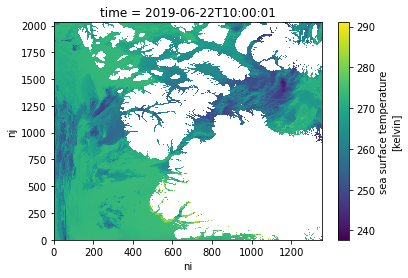
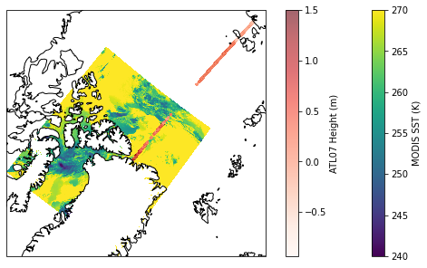

Accessing and harmonizing data located within and outside of the NASA Earthdata Cloud
Summary
This tutorial will combine several workflow steps and components from the previous days, demonstrating the process of using the geolocation of data available outside of the Earthdata Cloud to then access coincident variables of cloud-accessible data. This may be a common use case as NASA Earthdata continues to migrate to the cloud, producing a “hybrid” data archive across Amazon Web Services (AWS) and original on-premise data storage systems. Additionally, you may also want to combine field measurements with remote sensing data available on the Earthdata Cloud.
This specific example explores the pairing of the ICESat-2 ATL07 Sea Ice Height data product, currently (as of November 2021) available publicly via direct download at the NSIDC DAAC, along with Sea Surface Temperature (SST) from the GHRSST MODIS L2 dataset (MODIS_A-JPL-L2P-v2019.0) available from PO.DAAC on the Earthdata Cloud.
The use case we’re looking at today centers over an area north of Greenland for a single day in June, where a melt pond was observed using the NASA OpenAltimetry application. Melt ponds are an important feature of Arctic sea ice dynamics, leading to an decrease in sea ice albedo and other changes in heat balance. Many NASA Earthdata datasets produce variables including sea ice albedo, sea surface temperature, air temperature, and sea ice height, which can be used to better understand these dynamics.
Requirements
AWS instance running in us-west 2
Earthdata Login
.netrc file
Learning Objectives
Search for data programmatically using the Common Metadata Repository (CMR), determining granule (file) coverage across two datasets over an area of interest.
Download data from an on-premise storage system to our cloud environment.
Read in 1-dimensional trajectory data (ICESat-2 ATL07) into xarray and perform attribute conversions.
Select and read in sea surface temperature (SST) data (MODIS_A-JPL-L2P-v2019.0) from the Earthdata Cloud into xarray.
Extract, resample, and plot coincident SST data based on ICESat-2 geolocation.
Import packages
import osfrom pathlib import Pathfrom pprint import pprint# Access via downloadimport requests# Access AWS S3import s3fs# Read and work with datasetsimport xarray as xrimport numpy as npimport h5py# For plottingimport matplotlib.pyplot as pltimport cartopy.crs as ccrsfrom shapely.geometry import box# For resamplingimport pyresample
Specify data, time range, and area of interest
We are going to focus on getting data for an area north of Greenland for a single day in June.
These bounding_box and temporal variables will be used for data search, subset, and access below.
The same search and access steps for both datasets can be performed via Earthdata Search using the same spatial and temporal filtering options. See the Earthdata Search tutorial for more information on how to use Earthdata Search to discover and access data from the Earthdata Cloud.
# Bounding Box spatial parameter in decimal degree 'W,S,E,N' format.bounding_box ='-62.8,81.7,-56.4,83'# Each date in yyyy-MM-ddTHH:mm:ssZ format; date range in start,end formattemporal ='2019-06-22T00:00:00Z,2019-06-22T23:59:59Z'
See the Data Discovery with CMR tutorial for more details on how to navigate the NASA Common Metadata Repository (CMR) Application Programming Interface, or API. For some background, the CMR catalogs all data for NASA’s Earth Observing System Data and Information System (EOSDIS). The CMR API allows applications (software, services, etc) to send information to each other. A helpful analogy is a waiter in a restaurant. The waiter takes your drink or food order that you select from the menu, often translated into short-hand, to the bar or kitchen, and then returns (hopefully) with what you ordered when it is ready.
The CMR API accepts search terms such as collection name, keywords, datetime range, and location, queries the CMR database and returns the results.
For this tutorial, we have already identified the unique identifier, or concept_id for each dataset:
This Earthdata Search Project also provides the same data access links that we will identify in the following steps for each dataset (note that you will need an Earthdata Login account to access this project).
Search and download ICESat-2 ATL07 files
Perform a granule search over our time and area of interest. How many granules are returned?
Although several services are supported for ICESat-2 data, we are demonstrating direct access through the “on-prem” file system at NSIDC for simplicity.
Some of these services include: - icepyx - From the icepyx documentation: “icepyx is both a software library and a community composed of ICESat-2 data users, developers, and the scientific community. We are working together to develop a shared library of resources - including existing resources, new code, tutorials, and use-cases/examples - that simplify the process of querying, obtaining, analyzing, and manipulating ICESat-2 datasets to enable scientific discovery.” - NSIDC DAAC Data Access and Service API - The API provided by the NSIDC DAAC allows you to access data programmatically using specific temporal and spatial filters. The same subsetting, reformatting, and reprojection services available on select data sets through NASA Earthdata Search can also be applied using this API. - IceFlow - The IceFlow python library simplifies accessing and combining data from several of NASA’s cryospheric altimetry missions, including ICESat/GLAS, Operation IceBridge, and ICESat-2. In particular, IceFlow harmonizes the various file formats and georeferencing parameters across several of the missions’ data sets, allowing you to analyze data across the multi-decadal time series.
We’ve found 2 granules. We’ll download the first one and write it to a file with the same name as the producer_granule_id.
We need the url for the granule as well. This is href links we printed out above.
To retrieve the granule data, we use the requests.get() method, which will utilize the .netrc file on the backend to authenticate the request against Earthdata Login.
r = requests.get(icesat_url)
The response returned by requests has the same structure as all the other responses: a header and contents. The header information has information about the response, including the size of the data we downloaded in bytes.
The contents needs to be saved to a file. To keep the directory clean, we will create a downloads directory to store the file. We can use a shell command to do this or use the makedirs method from the os package.
os.makedirs("downloads", exist_ok=True)
You should see a downloads directory in the file browser.
To write the data to a file, we use open to open a file. We need to specify that the file is open for writing by using the write-modew. We also need to specify that we want to write bytes by setting the binary-modeb. This is important because the response contents are bytes. The default mode for open is text-mode. So make sure you use b.
We’ll use the with statement context-manager to open the file, write the contents of the response, and then close the file. Once the data in r.content is written sucessfully to the file, or if there is an error, the file is closed by the context-manager.
We also need to prepend the downloads path to the filename. We do this using Path from the pathlib package in the standard library.
outfile = Path('downloads', icesat_id)
ifnot outfile.exists():withopen(outfile, 'wb') as f: f.write(r.content)
ATL07-01_20190622055317_12980301_004_01.h5 is an HDF5 file. xarray can open this but you need to tell it which group to read the data from. In this case we read the sea ice segment height data for ground-track 1 left-beam. You can explore the variable hierarchy in Earthdata Search, by selecting the Customize option under Download Data.
This code block performs the following operations: - Extracts the height_segment_height variable from the heights group, along with the dimension variables contained in the higher level sea_ice_segments group, - Convert attributes from bytestrings to strings, - Drops the HDF attribute DIMENSION_LIST, - Sets _FillValue to NaN
variable_names = ['/gt1l/sea_ice_segments/latitude','/gt1l/sea_ice_segments/longitude','/gt1l/sea_ice_segments/delta_time','/gt1l/sea_ice_segments/heights/height_segment_height' ]with h5py.File(outfile, 'r') as h5: data_vars = {}for varname in variable_names: var = h5[varname] name = varname.split('/')[-1]# Convert attributes attrs = {}for k, v in var.attrs.items():if k !='DIMENSION_LIST':ifisinstance(v, bytes): attrs[k] = v.decode('utf-8')else: attrs[k] = v data = var[:]if'_FillValue'in attrs: data = np.where(data < attrs['_FillValue'], data, np.nan) data_vars[name] = (['segment'], data, attrs) is2_ds = xr.Dataset(data_vars)is2_ds
<xarray.Dataset>
Dimensions: (segment: 235584)
Dimensions without coordinates: segment
Data variables:
latitude (segment) float64 82.38 82.38 82.38 ... 72.61 72.61
longitude (segment) float64 -55.11 -55.11 ... 145.1 145.1
delta_time (segment) float64 4.642e+07 4.642e+07 ... 4.642e+07
height_segment_height (segment) float32 nan nan nan ... -0.4335 -0.4463
Number of GPS seconds since the ATLAS SDP epoch. The ATLAS Standard Data Products (SDP) epoch offset is defined within /ancillary_data/atlas_sdp_gps_epoch as the number of GPS seconds between the GPS epoch (1980-01-06T00:00:00.000000Z UTC) and the ATLAS SDP epoch. By adding the offset contained within atlas_sdp_gps_epoch to delta time parameters, the time in gps_seconds relative to the GPS epoch can be computed.
Our CMR granule search returned 14 files for our time and area of interest. However, not all granules will be suitable for analysis.
I’ve identified the image with granule id G1956158784-POCLOUD as a good candidate, this is the 9th granule. In this image, our area of interest is close to nadir. This means that the instantaneous field of view over the area of interest cover a smaller area than at the edge of the image.
We are looking for the link for direct download access via s3. This is a url but with a prefix s3://. This happens to be the first href link in the metadata.
For a single granule we can cut and paste the s3 link. If we have several granules, the s3 links can be extracted with some simple code.
granule = granules[9]for link in granule['links']:if link['href'].startswith('s3://'): s3_link = link['href']s3_link
Essentially, what we are doing in this step is to “mount” the s3 bucket as a file system. This allows us to treat the S3 bucket in a similar way to a local file system.
Now we have the S3FileSystem set up, we can access the granule. xarray cannot open a S3File directly, so we use the open method for the S3FileSystem to open the granule using the endpoint url we extracted from the metadata. We also have to set the mode='rb'. This opens the granule in read-only mode and in byte-mode. Byte-mode is important. By default, open opens a file as text - in this case it would just be a string of characters - and xarray doesn’t know what to do with that.
We then pass the S3File object f to xarray.open_dataset. For this dataset, we also have to set decode_cf=False. This switch tells xarray not to use information contained in variable attributes to generate human readable coordinate variables. Normally, this should work for netcdf files but for this particular cloud-hosted dataset, variable attribute data is not in the form expected by xarray. We’ll fix this.
f = s3_fs.open(s3_link, mode='rb')modis_ds = xr.open_dataset(f, decode_cf=False)
If you click on the Show/Hide Attributes icon (the first document-like icon to the right of coordinate variable metadata) you can see that attributes are one-element arrays containing bytestrings.
[b'sea surface temperature from thermal IR (11 um) channels']
scale_factor :
[0.005]
add_offset :
[273.15]
source :
[b'NASA and University of Miami']
coordinates :
[b'lon lat']
coverage_content_type :
[b'physicalMeasurement']
[2748620 values with dtype=int16]
sst_dtime
(time, nj, ni)
int16
...
long_name :
[b'time difference from reference time']
units :
[b'seconds']
_FillValue :
[-32768]
valid_min :
[-32767]
valid_max :
[32767]
comment :
[b'time plus sst_dtime gives seconds after 00:00:00 UTC January 1, 1981']
coordinates :
[b'lon lat']
coverage_content_type :
[b'referenceInformation']
[2748620 values with dtype=int16]
quality_level
(time, nj, ni)
int8
...
long_name :
[b'quality level of SST pixel']
_FillValue :
[-128]
valid_min :
[0]
valid_max :
[5]
comment :
[b'thermal IR SST proximity confidence value; signed byte array: WARNING Some applications are unable to properly handle signed byte values. If values are encountered > 127, please subtract 256 from this reported value']
[b'SSES bias error based on proximity confidence flags']
units :
[b'kelvin']
_FillValue :
[-128]
valid_min :
[-127]
valid_max :
[127]
comment :
[b'thermal IR SST bias error; signed byte array: WARNING Some applications are unable to properly handle signed byte values. If values are encountered > 127, please subtract 256 from this reported value']
scale_factor :
[0.15748031]
add_offset :
[0.]
coordinates :
[b'lon lat']
coverage_content_type :
[b'auxiliaryInformation']
[2748620 values with dtype=int8]
sses_standard_deviation
(time, nj, ni)
int8
...
long_name :
[b'SSES standard deviation error based on proximity confidence flags']
units :
[b'kelvin']
_FillValue :
[-128]
valid_min :
[-127]
valid_max :
[127]
comment :
[b'thermal IR SST standard deviation error; signed byte array: WARNING Some applications are unable to properly handle signed byte values. If values are encountered > 127, please subtract 256 from this reported value']
scale_factor :
[0.07874016]
add_offset :
[10.]
coordinates :
[b'lon lat']
coverage_content_type :
[b'auxiliaryInformation']
[2748620 values with dtype=int8]
l2p_flags
(time, nj, ni)
int16
...
long_name :
[b'L2P flags']
valid_min :
[0]
valid_max :
[16]
comment :
[b'These flags can be used to further filter data variables']
coordinates :
[b'lon lat']
flag_meanings :
[b'microwave land ice lake river']
flag_masks :
[ 1 2 4 8 16]
coverage_content_type :
[b'qualityInformation']
[2748620 values with dtype=int16]
chlorophyll_a
(time, nj, ni)
float32
...
long_name :
[b'Chlorophyll Concentration, OC3 Algorithm']
units :
[b'mg m^-3']
_FillValue :
[-32767.]
valid_min :
[0.001]
valid_max :
[100.]
comment :
[b'non L2P core field']
coordinates :
[b'lon lat']
coverage_content_type :
[b'auxiliaryInformation']
[2748620 values with dtype=float32]
K_490
(time, nj, ni)
int16
...
long_name :
[b'Diffuse attenuation coefficient at 490 nm (OBPG)']
units :
[b'm^-1']
_FillValue :
[-32767]
valid_min :
[50]
valid_max :
[30000]
comment :
[b'non L2P core field']
scale_factor :
[0.0002]
add_offset :
[0.]
coordinates :
[b'lon lat']
coverage_content_type :
[b'auxiliaryInformation']
[2748620 values with dtype=int16]
wind_speed
(time, nj, ni)
int8
...
long_name :
[b'10m wind speed']
standard_name :
[b'wind_speed']
units :
[b'm s-1']
_FillValue :
[-128]
valid_min :
[-127]
valid_max :
[127]
comment :
[b'Wind at 10 meters above the sea surface']
scale_factor :
[0.2]
add_offset :
[25.]
source :
[b'TBD. Placeholder. Currently empty']
coordinates :
[b'lon lat']
grid_mapping :
[b'TBD']
time_offset :
[2.]
height :
[b'10 m']
coverage_content_type :
[b'auxiliaryInformation']
[2748620 values with dtype=int8]
dt_analysis
(time, nj, ni)
int8
...
long_name :
[b'deviation from SST reference climatology']
units :
[b'kelvin']
_FillValue :
[-128]
valid_min :
[-127]
valid_max :
[127]
comment :
[b'TBD']
scale_factor :
[0.1]
add_offset :
[0.]
source :
[b'TBD. Placeholder. Currently empty']
coordinates :
[b'lon lat']
coverage_content_type :
[b'auxiliaryInformation']
[2748620 values with dtype=int8]
Conventions :
[b'CF-1.7, ACDD-1.3']
title :
[b'MODIS Aqua L2P SST']
summary :
[b'Sea surface temperature retrievals produced at the NASA OBPG for the MODIS Aqua sensor. These have been reformatted to GHRSST GDS specifications by the JPL PO.DAAC']
references :
[b'GHRSST Data Processing Specification v2r5']
institution :
[b'NASA/JPL/OBPG/RSMAS']
history :
[b'MODIS L2P created at JPL PO.DAAC']
comment :
[b'L2P Core without DT analysis or other ancillary fields; Day, Start Node:Ascending, End Node:Descending; WARNING Some applications are unable to properly handle signed byte values. If values are encountered > 127, please subtract 256 from this reported value; Refined']
license :
[b'GHRSST and PO.DAAC protocol allow data use as free and open.']
id :
[b'MODIS_A-JPL-L2P-v2019.0']
naming_authority :
[b'org.ghrsst']
product_version :
[b'2019.0']
uuid :
[b'f6e1f61d-c4a4-4c17-8354-0c15e12d688b']
gds_version_id :
[b'2.0']
netcdf_version_id :
[b'4.1']
date_created :
[b'20200221T085224Z']
file_quality_level :
[3]
spatial_resolution :
[b'1km']
start_time :
[b'20190622T100001Z']
time_coverage_start :
[b'20190622T100001Z']
stop_time :
[b'20190622T100459Z']
time_coverage_end :
[b'20190622T100459Z']
northernmost_latitude :
[89.9862]
southernmost_latitude :
[66.2723]
easternmost_longitude :
[-45.9467]
westernmost_longitude :
[152.489]
source :
[b'MODIS sea surface temperature observations for the OBPG']
[b'Oceans > Ocean Temperature > Sea Surface Temperature']
keywords_vocabulary :
[b'NASA Global Change Master Directory (GCMD) Science Keywords']
standard_name_vocabulary :
[b'NetCDF Climate and Forecast (CF) Metadata Convention']
geospatial_lat_units :
[b'degrees_north']
geospatial_lat_resolution :
[0.01]
geospatial_lon_units :
[b'degrees_east']
geospatial_lon_resolution :
[0.01]
acknowledgment :
[b'The MODIS L2P sea surface temperature data are sponsored by NASA']
creator_name :
[b'Ed Armstrong, JPL PO.DAAC']
creator_email :
[b'edward.m.armstrong@jpl.nasa.gov']
creator_url :
[b'http://podaac.jpl.nasa.gov']
project :
[b'Group for High Resolution Sea Surface Temperature']
publisher_name :
[b'The GHRSST Project Office']
publisher_url :
[b'http://www.ghrsst.org']
publisher_email :
[b'ghrsst-po@nceo.ac.uk']
processing_level :
[b'L2P']
cdm_data_type :
[b'swath']
startDirection :
[b'Ascending']
endDirection :
[b'Descending']
day_night_flag :
[b'Day']
To fix this, we need to extract array elements as scalars, and convert those scalars from bytestrings to strings. We use the decode method to do this. The bytestrings are encoded as utf-8, which is a unicode character format. This is the default encoding for decode but we’ve included it as an argument to be explicit.
Not all attributes are bytestrings. Some are floats. Take a look at _FillValue, and valid_min and valid_max. To avoid an error, we use the isinstance function to check if the value of an attributes is type bytes - a bytestring. If it is, then we decode it. If not, we just extract the scalar and do nothing else.
We also fix the global attributes.
def fix_attributes(da):'''Decodes bytestring attributes to strings'''for attr, value in da.attrs.items():ifisinstance(value[0], bytes): da.attrs[attr] = value[0].decode('utf-8')else: da.attrs[attr] = value[0]return# Fix variable attributesfor var in modis_ds.variables: da = modis_ds[var] fix_attributes(da)# Fix global attributesfix_attributes(modis_ds)
With this done, we can use the xarray function decode_cf to convert the attributes.
modis_ds = xr.decode_cf(modis_ds)
modis_ds
<xarray.Dataset>
Dimensions: (nj: 2030, ni: 1354, time: 1)
Coordinates:
lat (nj, ni) float32 ...
lon (nj, ni) float32 ...
* time (time) datetime64[ns] 2019-06-22T10:00:01
Dimensions without coordinates: nj, ni
Data variables:
sea_surface_temperature (time, nj, ni) float32 ...
sst_dtime (time, nj, ni) timedelta64[ns] ...
quality_level (time, nj, ni) float32 ...
sses_bias (time, nj, ni) float32 ...
sses_standard_deviation (time, nj, ni) float32 ...
l2p_flags (time, nj, ni) int16 ...
chlorophyll_a (time, nj, ni) float32 ...
K_490 (time, nj, ni) float32 ...
wind_speed (time, nj, ni) float32 ...
dt_analysis (time, nj, ni) float32 ...
Attributes: (12/49)
Conventions: CF-1.7, ACDD-1.3
title: MODIS Aqua L2P SST
summary: Sea surface temperature retrievals produced a...
references: GHRSST Data Processing Specification v2r5
institution: NASA/JPL/OBPG/RSMAS
history: MODIS L2P created at JPL PO.DAAC
... ...
publisher_email: ghrsst-po@nceo.ac.uk
processing_level: L2P
cdm_data_type: swath
startDirection: Ascending
endDirection: Descending
day_night_flag: Day
sea surface temperature from thermal IR (11 um) channels
source :
NASA and University of Miami
coverage_content_type :
physicalMeasurement
[2748620 values with dtype=float32]
sst_dtime
(time, nj, ni)
timedelta64[ns]
...
long_name :
time difference from reference time
valid_min :
-32767
valid_max :
32767
comment :
time plus sst_dtime gives seconds after 00:00:00 UTC January 1, 1981
coverage_content_type :
referenceInformation
[2748620 values with dtype=timedelta64[ns]]
quality_level
(time, nj, ni)
float32
...
long_name :
quality level of SST pixel
valid_min :
0
valid_max :
5
comment :
thermal IR SST proximity confidence value; signed byte array: WARNING Some applications are unable to properly handle signed byte values. If values are encountered > 127, please subtract 256 from this reported value
SSES bias error based on proximity confidence flags
units :
kelvin
valid_min :
-127
valid_max :
127
comment :
thermal IR SST bias error; signed byte array: WARNING Some applications are unable to properly handle signed byte values. If values are encountered > 127, please subtract 256 from this reported value
coverage_content_type :
auxiliaryInformation
[2748620 values with dtype=float32]
sses_standard_deviation
(time, nj, ni)
float32
...
long_name :
SSES standard deviation error based on proximity confidence flags
units :
kelvin
valid_min :
-127
valid_max :
127
comment :
thermal IR SST standard deviation error; signed byte array: WARNING Some applications are unable to properly handle signed byte values. If values are encountered > 127, please subtract 256 from this reported value
coverage_content_type :
auxiliaryInformation
[2748620 values with dtype=float32]
l2p_flags
(time, nj, ni)
int16
...
long_name :
L2P flags
valid_min :
0
valid_max :
16
comment :
These flags can be used to further filter data variables
flag_meanings :
microwave land ice lake river
flag_masks :
1
coverage_content_type :
qualityInformation
[2748620 values with dtype=int16]
chlorophyll_a
(time, nj, ni)
float32
...
long_name :
Chlorophyll Concentration, OC3 Algorithm
units :
mg m^-3
valid_min :
0.001
valid_max :
100.0
comment :
non L2P core field
coverage_content_type :
auxiliaryInformation
[2748620 values with dtype=float32]
K_490
(time, nj, ni)
float32
...
long_name :
Diffuse attenuation coefficient at 490 nm (OBPG)
units :
m^-1
valid_min :
50
valid_max :
30000
comment :
non L2P core field
coverage_content_type :
auxiliaryInformation
[2748620 values with dtype=float32]
wind_speed
(time, nj, ni)
float32
...
long_name :
10m wind speed
standard_name :
wind_speed
units :
m s-1
valid_min :
-127
valid_max :
127
comment :
Wind at 10 meters above the sea surface
source :
TBD. Placeholder. Currently empty
grid_mapping :
TBD
time_offset :
2.0
height :
10 m
coverage_content_type :
auxiliaryInformation
[2748620 values with dtype=float32]
dt_analysis
(time, nj, ni)
float32
...
long_name :
deviation from SST reference climatology
units :
kelvin
valid_min :
-127
valid_max :
127
comment :
TBD
source :
TBD. Placeholder. Currently empty
coverage_content_type :
auxiliaryInformation
[2748620 values with dtype=float32]
Conventions :
CF-1.7, ACDD-1.3
title :
MODIS Aqua L2P SST
summary :
Sea surface temperature retrievals produced at the NASA OBPG for the MODIS Aqua sensor. These have been reformatted to GHRSST GDS specifications by the JPL PO.DAAC
references :
GHRSST Data Processing Specification v2r5
institution :
NASA/JPL/OBPG/RSMAS
history :
MODIS L2P created at JPL PO.DAAC
comment :
L2P Core without DT analysis or other ancillary fields; Day, Start Node:Ascending, End Node:Descending; WARNING Some applications are unable to properly handle signed byte values. If values are encountered > 127, please subtract 256 from this reported value; Refined
license :
GHRSST and PO.DAAC protocol allow data use as free and open.
id :
MODIS_A-JPL-L2P-v2019.0
naming_authority :
org.ghrsst
product_version :
2019.0
uuid :
f6e1f61d-c4a4-4c17-8354-0c15e12d688b
gds_version_id :
2.0
netcdf_version_id :
4.1
date_created :
20200221T085224Z
file_quality_level :
3
spatial_resolution :
1km
start_time :
20190622T100001Z
time_coverage_start :
20190622T100001Z
stop_time :
20190622T100459Z
time_coverage_end :
20190622T100459Z
northernmost_latitude :
89.9862
southernmost_latitude :
66.2723
easternmost_longitude :
-45.9467
westernmost_longitude :
152.489
source :
MODIS sea surface temperature observations for the OBPG
Oceans > Ocean Temperature > Sea Surface Temperature
keywords_vocabulary :
NASA Global Change Master Directory (GCMD) Science Keywords
standard_name_vocabulary :
NetCDF Climate and Forecast (CF) Metadata Convention
geospatial_lat_units :
degrees_north
geospatial_lat_resolution :
0.01
geospatial_lon_units :
degrees_east
geospatial_lon_resolution :
0.01
acknowledgment :
The MODIS L2P sea surface temperature data are sponsored by NASA
creator_name :
Ed Armstrong, JPL PO.DAAC
creator_email :
edward.m.armstrong@jpl.nasa.gov
creator_url :
http://podaac.jpl.nasa.gov
project :
Group for High Resolution Sea Surface Temperature
publisher_name :
The GHRSST Project Office
publisher_url :
http://www.ghrsst.org
publisher_email :
ghrsst-po@nceo.ac.uk
processing_level :
L2P
cdm_data_type :
swath
startDirection :
Ascending
endDirection :
Descending
day_night_flag :
Day
Let’s make a quick plot to take a look at the sea_surface_temperature variable.
modis_ds.sea_surface_temperature.plot() ;

Plot MODIS and ICESat-2 data on a map
map_proj = ccrs.NorthPolarStereo()fig = plt.figure(figsize=(10,5))ax = fig.add_subplot(projection=map_proj)ax.coastlines()# Plot MODIS sst, save object as sst_img, so we can add colorbarsst_img = ax.pcolormesh(modis_ds.lon, modis_ds.lat, modis_ds.sea_surface_temperature[0,:,:], vmin=240, vmax=270, # Set max and min values for plotting cmap='viridis', shading='auto', # shading='auto' to avoid warning transform=ccrs.PlateCarree()) # coords are lat,lon but map if NPS # Plot IS2 surface height is2_img = ax.scatter(is2_ds.longitude, is2_ds.latitude, c=is2_ds.height_segment_height, vmax=1.5, # Set max height to plot cmap='Reds', alpha=0.6, s=2, transform=ccrs.PlateCarree())# Add colorbarsfig.colorbar(sst_img, label='MODIS SST (K)')fig.colorbar(is2_img, label='ATL07 Height (m)')
<matplotlib.colorbar.Colorbar at 0x7fe311d24be0>

Extract SST coincident with ICESat-2 track
The MODIS SST is swath data, not a regularly-spaced grid of sea surface temperatures. ICESat-2 sea surface heights are irregularly spaced segments along one ground-track traced by the ATLAS instrument on-board ICESat-2. Fortunately, pyresample allows us to resample swath data.
pyresample has many resampling methods. We’re going to use the nearest neighbour resampling method, which is implemented using a k-dimensional tree algorithm or K-d tree. K-d trees are data structures that improve search efficiency for large data sets.
The first step is to define the geometry of the ICESat-2 and MODIS data. To do this we use the latitudes and longitudes of the datasets.
We then implement the resampling method, passing the two geometries we have defined, the data array we want to resample - in this case sea surface temperature, and a search radius. The resampling method expects a numpy.Array rather than an xarray.DataArray, so we use values to get the data as a numpy.Array.
We set the search radius to 1000 m. The MODIS data is nominally 1km spacing.
Number of GPS seconds since the ATLAS SDP epoch. The ATLAS Standard Data Products (SDP) epoch offset is defined within /ancillary_data/atlas_sdp_gps_epoch as the number of GPS seconds between the GPS epoch (1980-01-06T00:00:00.000000Z UTC) and the ATLAS SDP epoch. By adding the offset contained within atlas_sdp_gps_epoch to delta time parameters, the time in gps_seconds relative to the GPS epoch can be computed.